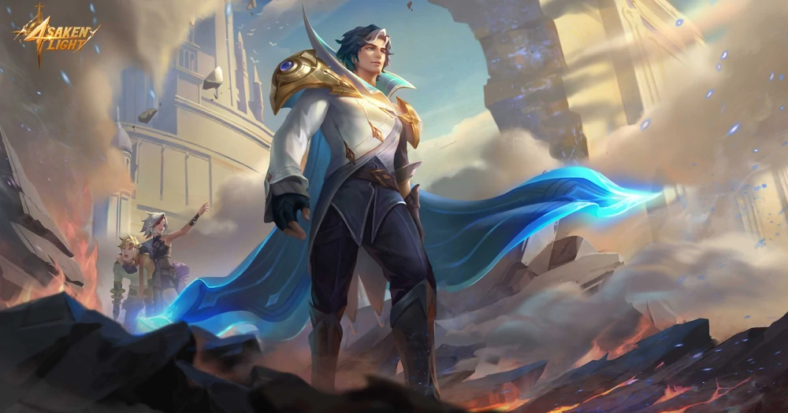
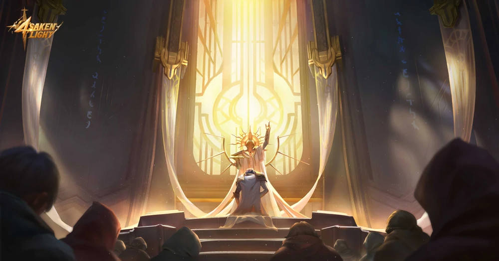
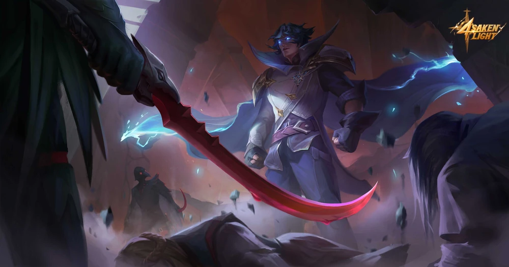

Story
The Knight: Darkness Before Dawn
"The fear and dread of you shall be upon every beast and fowl. Your verdict be accepted by every soul that walks the earth. And every path Light shines upon, by your hand shall they be drawn." —Arbiter of Light
Xavier was a glorious member of the Knights of Light—a force that rivaled the Light's Order of the Moniyan Empire. Besides being the youngest Arbiter of Light, he was also known for his unusual quirks...
Xavier was born into an ordinary merchant family in Lumina City. The only thing unusual, if there was any, was his mother—a Light Elf. Probably due to his Elf lineage, Xavier was born with extraordinary intelligence and eyes the color of the purest sapphire. Xavier's father once had high hopes for Xavier, thinking he could bring a fortune to his business. Xavier, however, showed zero interest in the family business and joined the Monastery of Light the moment he came of age. Before he left, his mother, who also believed in the King of Light, gave him a magic cloak crafted by the Elves.
To the followers of Light, the Monastery of Light was the sacred place that they'd sacrifice everything to be a part of, but only very few of them could pass the harsh, if not impossible, entry tests. That wasn't the case for Xavier, and the reason could be traced back to when he was a child.
When the night fell, Little Xavier would often sneak out of the house to play with the cats on the street. He gave these ordinary cats each a new identity, either the "hero" or the "evil dragon", while he himself the "commander" overseeing the battlefield. Xavier had been immersed in his imaginary heroic adventure, until one day the "evil dragon" disappeared. He went to look for it, only to find it surrounded by a pack of stray dogs. The latter was about to tear the "evil dragon" to pieces! Without thinking, Little Xavier rushed to the "evil dragon's" side and held it in his arms. He squeezed his eyes shut and, for the first time, sensed white-hot rage coursing through his veins. The pain didn't come as he'd expected. It was as if some mysterious substance had flowed out of Xavier's body and stopped the stray dogs in their tracks. Xavier was relieved. Still holding the "evil dragon", he didn't realize then the miracle was created by himself, and that was the first awakening of his control over Mystic magic—a rare power that few in history had ever possessed.
In the Monastery's library, Xavier found the perfect spell for his Mystic magic in an ancient tome—a spell that allowed his power to increase steadily with the amount of magic around him. Under his control, the highly compressed magic particles would fission and explode, creating immense destructive energy in an instant.
Xavier's talent was soon discovered by the Bishop of the Monastery of Light, Rod Sidon. The Bishop recruited Xavier into the Knights of Light, a force that was composed entirely of the faithful followers of the King of Light. The Knights of Light had been forcibly disbanded by the Emperor multiple times in history, and it was only recently, after Dyrroth's invasion, did the Church find the appropriate excuse to rebuild it.

After that, Xavier earned countless merits on the missions issued by the Church and was highly praised by the Bishop. At the subsequent Light Gathering, the Bishop placed the Badge of Light on Xavier's chest and announced him as the Arbiter of Light.
Xavier received the mission to suppress the heretics of the Free Smiths' Guild not long after. According to the order, he was supposed to cover the Church's secret force, "Ravens", to attack the heretics' fortress. This special force recruited by the Bishop gathered people from all sorts of backgrounds who wanted to atone for their sins. They were like the ravens hidden amongst shadows, their sole purpose to peck at all the filth that could hinder the descent of Light. By hook or by crook.
With his signature attack, Xavier breached the fortress's defense with merely a snap of his fingers. The sight that came afterward, however, made him stop dead in his tracks. The fortress was full of women, children, and the elderly, and on the ground was a mother wounded by his Mystic magic, still desperately shielding her baby... Yet the "Ravens" rushed in and finished off the survivors with sick delight.
Xavier stumbled into the depths of the fortress, trembling all over. From the wife of a Smith Master, he learned the truth behind the suppression. It was nothing about suppressing heretics, but to rob the Smiths' enchantment secrets! For the first time, Xavier had doubts about the mission issued by the Archbishop. But just as he was debating whether to execute the "wipeout", a "Raven" behind him had already cast his flying knife.
The woman was killed in an instant, when Xavier sensed movements in the shadow behind her. There was a red-haired child hidden in the shadows, scared and distraught.
Xavier roared in rage, "I vowed to punish heretics, but never to tolerate such vile massacre!" The "Ravens" were stunned. Still furious, Xavier ordered the "Ravens" to evacuate the site, before he secretly placed the child in the Church's orphanage.

The other Arbiter of Light, Alucard, witnessed the whole incident. He tried to cover the incident up for Xavier, but somehow it still reached the Bishop's ears.
To the Bishop, what Xavier did was equivalent to siding with the heretics. Utterly disappointed, the Bishop sent Xavier to the border of the Empire to execute dangerous missions against the Abyss. During the following ten years, not a moment wasn't Xavier haunted by what he saw in the fortress. He no longer had that passion for the tasks assigned to him and would often mock his colleagues with sarcasm.
This situation lasted until Rod Sidon became the new Archbishop, who'd then decided to give Xavier a second chance and called Xavier back to his side. To lead the guards maintaining the order of Lumina City. Xavier took on this new position with renewed enthusiasm. The signs of heresy in Lumina City almost disappeared, and the Church took the opportunity and claimed it was all because of the new Archbishop following the oracle of the King of Light.
During this period, however, Xavier saw through the injustice in Lumina City and no longer believed in the Church's propaganda. He began to taunt his colleagues with sarcastic remarks yet again and did only the bare minimum to fulfill his tasks. More than once had the urge to resist or leave come to Xavier's mind. It was only the vow he'd made to serve the Archbishop and fight for Light his whole life that held him back.
Beneath Xavier's facade of indifference was an endless struggle, and for every passing moment he'd to convince himself not to succumb to the gaping void in his heart. He waited for the turn of events from fate—either to die, to leave, or to change.
During the Light Gathering hosted by the Archbishop, Xavier received a secret mission to patrol Lumina City and eliminate all signs of heresy.
On the mission, Xavier ran into Melissa and Yin who were chased by demons. The sign of heresy was a disgrace to the prestige of the Church!
Xavier eyed the two youngsters in silence. He was supposed to arrest these two suspected heretics on the spot, but looking at Yin who was injured while protecting the kid by the road, the image of the mother holding her child in the fortress a decade ago suddenly flashed across his mind.
The young Xavier back then had no other choice, but now? "Should I arrest them, let them off, or. . ."
Xavier said to himself, "This time, the choice is mine."